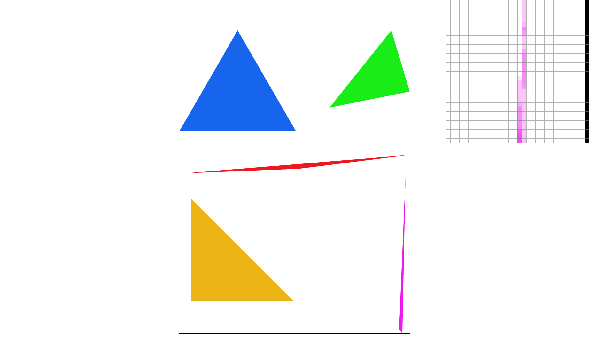

Overview
In this project, we created a rasterizer that can draw triangles, supersample these images to reduce aliasing, perform transformations, and map textures on a given set of uv coordinates. This series of tasks gave us a technical understanding of the computations that goes into creating digital images and how they can be manipulated using sampling, texture mapping, and transformations.
Section I: Rasterization
Part 1: Rasterizing single-color triangles
In this task, we created a rasterizer that would be able to iterate through a cooridnate system and render triangles. We first defined our coordinate system by taking the minimum and maximun x and y values based on the three points of the triangle given to us. As the for loops iterate through each point, a helper function takes in that point, and two other points that define the start and end to a line. This helper function will find the dot product between two lines: the norm of one of the triangle's sidelengths and a vector that connects the target point and one corner of the triangle. This dot product will determine which side of the triangle's sidelength the point is on. We ran this helper function on the current point and the two other sidelengths of the triangle. If the dot products for each of these functions returned the same sign or 0, that indicated that the current point was inside the triangle.
|
|
|
|
|

|
Part 2: Antialiasing triangles
In task 2 we updated the rasterize triangle function to support super sampling. Using the same double for loop we used to iterate through each of the original sized pixels in task 1, we nested another double for loop in order to iterate through each pixel according to our sample rate.
As we iterated through each of the subdivided pixels, we similarly checked if the center of the super pixels was within the triangle using the line test.
If each of the line tests returned all positive or all negative, our algorithm proceeds to add the point into the sample buffer and assign it to a corresponding color.
In order to map the indices of the smaller pixels according to the coordinates of the original sized pixels, we calculated the “new Y” and “new X” coordinates by multiplying both original x and y positions by the square root of the sample rate.
This position only marked the top corner of the pixel, so to find the offset, we added the counter of each of the for loops to take into account how many spaces away from the top corner the current point was. Then to find the new width, we multiplied the width by the square root of the sample rate as well.
Following the format of how we flattened the coordinates into the sample buffer array, we then multiplied the new Y with the new Width, and then added the new X.
Then within resolve to framebuffer, we needed to average out the super sampled pixel for each of the original sized pixels.
Once we averaged out each of the color values per original sized pixel, we reassigned the averaged color value to the frame buffer, indexed at the original coordinates of the image.
To average out the super sampled pixel from the sample buffer, we iterated through each of the original sized and super sampled pixels in the same way we had done in the rasterized triangle function,
adding up the values of the colors every iteration until it reached the sample rate value.
Once we added up each of the color’s values for the r, g, and b channels respectively, we divided each channel by the sample rate.
Then we finally assigned each pixel of the frame buffer to the averaged color * 255 in order to get a percentage.
|
|
|
|
|

|
Part 3: Transforms
In task 3, we implemented transformations using 3x3 matrices. Using these new transformation functions, we edited our cubeman to put them in a fencing position. We first edited the head and scaled it up to make it bigger to simulate a helmet. Then we slimmed them down by scaling the torso down and making it longer. Then we rotated the legs to put them in the right position of having a leg extended and one bent. To bend the leg we rotated the leg to have one rectangle slanted and one straight. We also bent an arm by rotating it to make a muscle flexing type of look.
|
|
Section II: Sampling
Part 4: Barycentric coordinates
In task 4, we updated the rasterize_interpolated_color_triangle function to interpolate between a defined set of colors. To do this, we recycled the code from our rasterize_triangle function, and instead of assigning the sample buffer to a single color, we set it equal to a helper function that will calculate the interpolated color based on the current x and y position within the triangle. This helper function will calculate the barycentric coordinates of the triangle, first finding the alpha, beta, and gamma coefficients using the x and y positions of each point on the triangle. Once the alpha, beta, and gamma values were calculated, we multiplied these coefficients to the colors at each point of the triangle: alpha to color 0, beta to color 1, and gamma to color 2.
|
|
|
Part 5: "Pixel sampling" for texture mapping
For task 5, we implemented the rasterize_textured_triangle function, which maps a set of uv coordinates onto an image. We did this by using the barycentric coordinates to interpolate the x and y coordinates of the rasterized screen samples onto the uv coordinates given. We then created two kinds of filters, sample_nearest and sample_bilinear, that would map the texture onto the UV coordinate plane. Sample_nearest takes the given u and v coordinates and rounds them to the nearest texel, and returns the associated color. Sample bilinear looks at the four colors closest to the current UV coordinate and carries out three linear interpolations: two in the horizontal direction, and then one in the vertical direction to interpolate between the two previous calculations. The bilinear sampling method proves to have less aliasing, given that it finds the in between color values according to a weighted average of the pixels surrounding it.
|
|
|
|
|
|
|
|
|
Part 6: "Level sampling" with mipmaps for texture mapping
Level sampling uses mipmaps to store different resolutions of the image’s data.
At Level 0, the mipmap stores full resolution, and as the level increases, the resolution decreases.
This sampling method allows us to adapt the amount of resolution applied to each region of the image according to a certain level of depth.
Although this method is good for antialiasing and decreases render time, it consequently requires more storage in order to store the data for each level.
To implement this, each of our sampling functions, sample_nearest and sample bilinear, take in a level.
Based on this level, each method multiplies the uv coordinate with the level’s corresponding width and height.
Then the sample methods retrieve the text associated with that scaled up coordinate.
Pixel sampling is similar in that it also proves to be a sufficient method for antialiasing an image.
Nearest as a sample method returns the texel that is closest to the passed in uv coordinate.
In contrast, the bilinear method interpolates the texel values for the four surrounding pixels.
As a result, bilinear produces a smoother image as it returns a color based on the averages of the pixels surrounding it.
Despite this nuance, both bilinear and nearest have a high performance, as they are able to anti-alias images at a fast rate.
Finally, while increasing the sample rate also is able to anti-alias images well, it requires more computation at less efficient speeds.
|
|
|

|
|